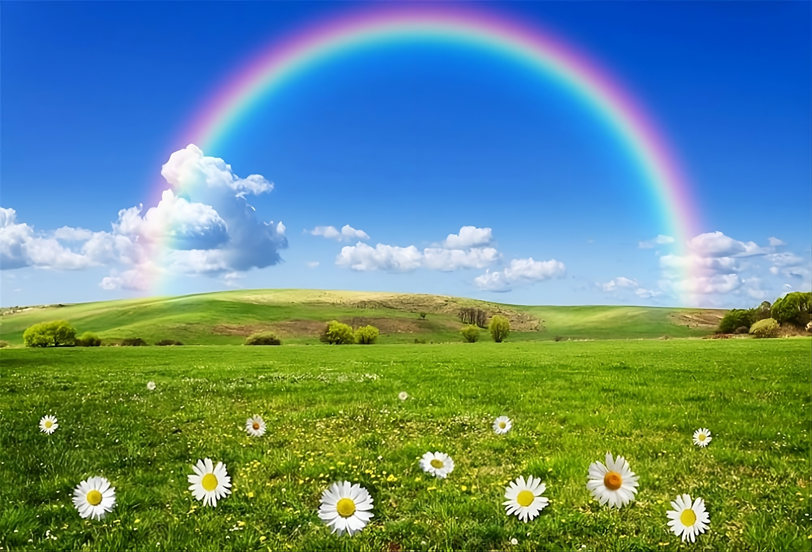
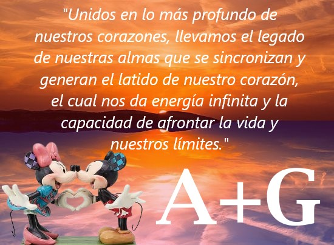

¡Felices 4 años y 5 meses juntos, amor de mi vida!
Llegamos a nuestro precioso día 23, amor de mi vida. Un nuevo mes ha pasado volando y nos ha regalado otra pieza de nuestra vida juntos para añadir al rompecabezas de nuestros momentos. Cada día que pasa me enamoro más de ti y siento que nuestro precioso vínculo crece cada vez más. Me siento orgulloso de estar aquí a tu lado por la persona extraordinaria y única que eres. Quiero darte las gracias, amor de mi vida, por estar a mi lado en cada momento, cada día. Eres el pilar de mi vida que da color a mis días y que me da todo tu precioso amor. Cada momento llena mi felicidad y me da fuerza. Desde el principio, juntos, un nuevo día que anhelo comenzar y vivir contigo con todo mi ser. Quiero darte las gracias por hacerme admirar desde la mañana tu preciosa sonrisa, que me deja sin aliento a cada instante, porque cada momento eres el paisaje más hermoso y único de todo el universo. Gracias por hacerme vivir en mi precioso hogar de tus dulces abrazos, el lugar donde quiero estar a salvo lejos de todo mal y que me hace sentir bien, mientras escucho tu preciosa voz que como una dulce melodía hace que cierre los ojos y como un niño amo apoyar mi cabeza en tu pecho y sentir el latido de tu pecho dulce corazón que te agradezco por mantener viva mi razón más especial de vivir única entre cada joya presente en todo el universo. Gracias por cada momento de ser la luz que guía mi vida y porque incluso cuando todo parece imposible estás ahí a mi lado y me haces sentir seguro borrando cada miedo o inseguridad porque me haces ver las cosas desde una perspectiva diferente y porque me enseñas que hay una solución para todo y porque cada momento están juntos para vivir y estar juntos. Admiro cada día tu preciosa fuerza que te hace hacer cosas extraordinarias y cada momento para mí eres el número uno en todo el universo capaz de enfrentar y ganar cada desafío e incluso cuando las cosas parecen difíciles recuerda nunca rendirte amor por la vida y estaré aquí cada día a tu lado incluso cuando no pueda soportarlo recuerda que estoy aquí en el fondo de tu corazón cierra los ojos y escucha el latido de tu corazón estaré allí contigo y para ti siempre y admiro cada día todo lo que haces y tomo ejemplo de ti amor de mi vida porque siento que todo lo que hago estás aquí conmigo gracias por todo precioso que me diste con el trabajo de Vittorio y cómo en poco tiempo hemos establecido 2 proyectos que solos habrían tomado más tiempo y hemos demostrado juntos que más allá de la vida también somos colegas y esto creo que nos completa en todo lo que hacemos juntos porque siempre somos la misma persona enfrentando cada desafío que la vida pone frente a nosotros. Quiero estar aquí todos los días por toda mi vida y más allá a tu lado, mi preciosa Andrea, y vivir juntos cada instante que la vida nos depare. Quiero disfrutar al máximo de nuestras emociones cada hermoso momento que la vida nos regala, como hoy, que estoy seguro será un día inolvidable. Estoy listo para guardarlo imborrable en lo más profundo de nuestros corazones, y lo mejor será recordarlo juntos, revivir el momento juntos. Te amo inmensamente desde lo más profundo de mi corazón, donde tu nombre está grabado para siempre, y en cada latido estoy aquí para ti, amor de mi vida, para darte todo el amor que tengo para ofrecerte, incluso a mi manera, para verte siempre, para hacerte sentir bien y feliz, porque cada día quiero verte bien en este mundo, y cuando eso sucede, mi corazón se regocija al estar aquí a tu lado, y en cada momento quiero decirte que me completas, ¡dándome emociones maravillosas que no puedo describir! Te amo infinitamente desde lo más profundo de mi mente, donde cada día, desde la mañana en adelante, eres el pensamiento más hermoso y único, que por la noche se convierte en un sueño asombroso que quiero vivir cada momento de mi vida y más allá. Te amo infinitamente, eres más importante que el oxígeno que respiro, eres la estrella que me guía y me protege en la vida, mostrándome en cada momento cómo enfrentar las situaciones, incluso las más difíciles, de la manera correcta, borrando cada miedo dentro de mí, dándome la fuerza para enfrentar la vida y completando mi amor con una felicidad infinita. Tú, mi precioso y único pingüino, a quien quiero amar por la vida y más allá, tú, mi mogliettina número uno en todo el universo, ¡mi todo! Feliz cuarto aniversario y quinto mes juntos, amor de mi vida, que cada una de las metas personales y de pareja se realice cada momento más y más brindando por cada meta porque Juntos siempre logramos cosas increíbles cada día. Que Dios te bendiga siempre, amor de mi vida, junto con nuestros objetivos como pareja y como individuos, y que bendiga nuestro amor y nuestra relación cada día, haciendo que nuestro vínculo crezca hasta el infinito y más allá. Topolino viziato sholo di cashetta!
Andrea + Giorgio = ¡hoy, para siempre y más allá!